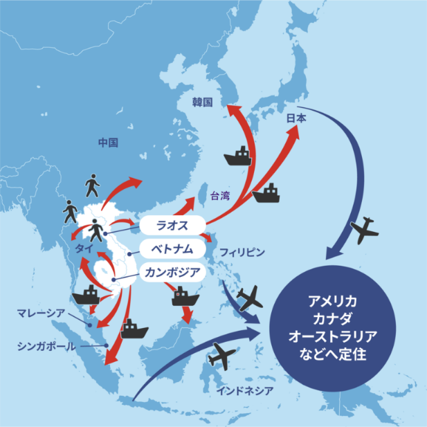
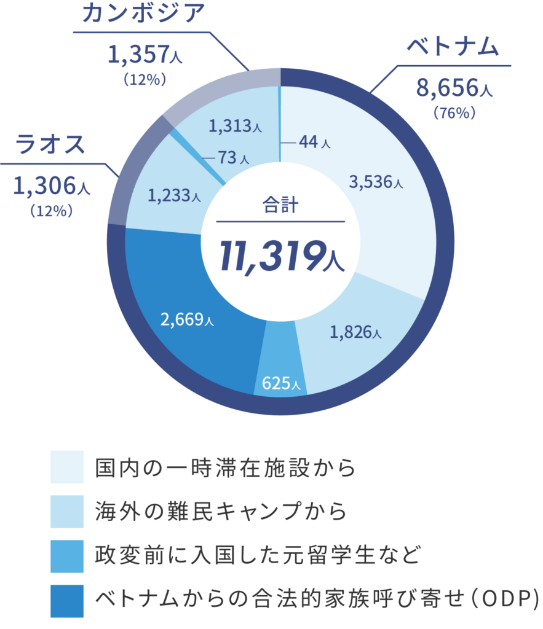
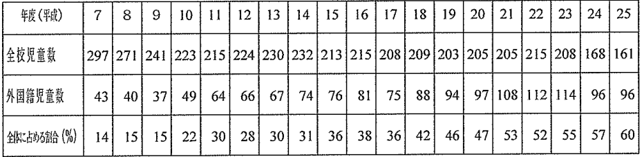
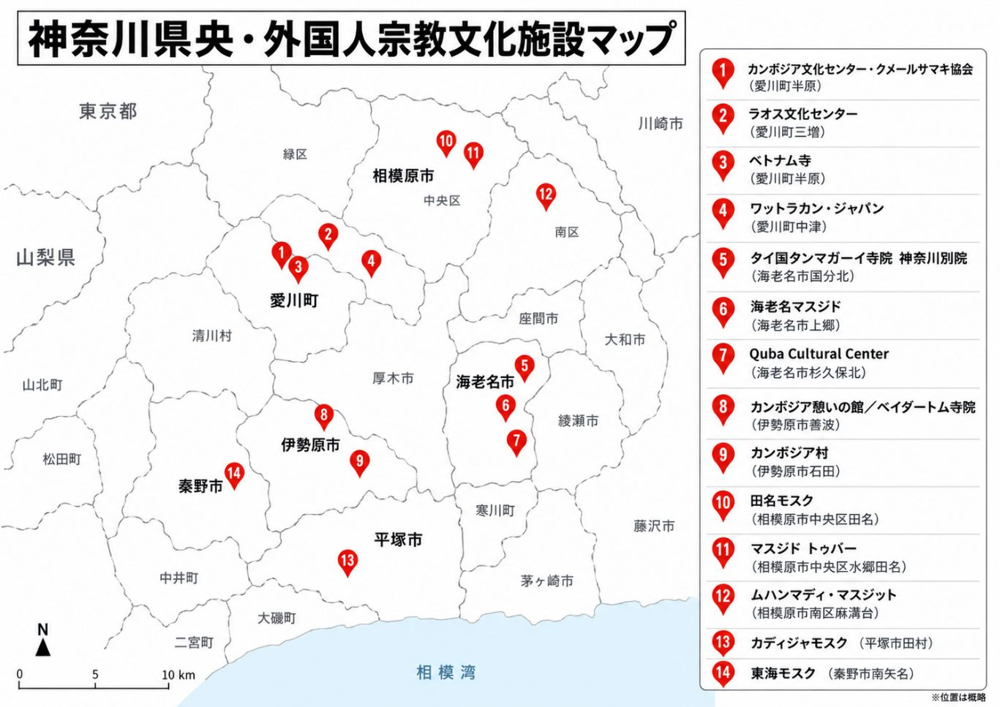

行行程
-
12:00〜ベトナム料理 タンハー希望者オプション地図を開く
-
13:00小田急江ノ島線「高座渋谷」駅 東口ロータリー集合地図を開く
-
13:10〜14:00いちょう団地
横浜市と大和市にまたがる大規模な県営住宅団地。1980年に大和市に開設された「大和定住促進センター」との関係から、インドシナ難民をはじめ外国にルーツを持つ住民が多く暮らすようになりました。
団地内を徒歩で巡り、旧いちょう小学校を利用したコミュニティハウス、エスニック食材店、多言語表示などを見学します。外国にルーツを持つ住民の日常生活や、多文化共生の地域づくりについて考えます。
地図を開く -
14:00〜いちょうコミュニティハウス（多文化まちづくり工房）
いちょう団地を拠点に、2000年から多文化共生の地域づくりに取り組む団体「多文化まちづくり工房」。日本語教室を中心に、子どもの学習支援、生活相談、進路支援、地域交流、防災活動などを行い、外国にルーツを持つ住民の暮らしを幅広く支えている。代表の早川秀樹氏からお話を伺います。
-
🚗 大和市〜愛川町へ車で移動（約1時間）
-
15:30〜16:00頃ラオス文化センター
在日ラオス人が共同出資により土地を購入、民家を改修して2003年に開設した文化交流施設。在日ラオス人の宗教・文化的な拠点となっています。ラオス人僧侶の方からお話を伺います。
地図を開く -
16:00〜16:40頃神奈川県内陸工業団地車窓見学地図を開く
-
17:00〜17:30頃本厚木駅到着・巡検終了
-
18:00頃〜インド料理店 ダワート
新井行きつけのインド料理店。インド出身の店主から、日本での出稼ぎ労働やインド料理店ビジネスの仕組み、生活などについて話を聞きながら食事をします。巡検の「多文化共生」というテーマをさらに深めます。
地図を開く
A日本の難民受け入れの基礎情報
日本における難民受け入れの歴史
1975年ベトナム戦争終結後、インドシナ三国（ベトナム・ラオス・カンボジア）では相次いで政変が発生し、新しい体制に移行した。しかし、新しい体制の下で、迫害を受けるおそれや、国の将来に不安を抱く人々が続出し、小舟でベトナムを脱出した人々（ボート・ピープル）や、陸路でタイ領に逃れたラオスやカンボジアの人々（ランド・ピープル）が発生した。
これらの人々はインドシナ難民と呼ばれる。日本には、1975年5月、最初のボート・ピープルが上陸し、一時滞在を認められた。
その後も、ボート・ピープルの到着が相次いだため、1978年、日本政府は閣議了解で、一時滞在中のベトナム難民の日本への定住を認め、翌1979年には、アジア地域の難民キャンプに一時滞在中のインドシナ難民や政変以前に日本に住んでいた元留学生などの定住を認めたほか、500人の定住枠を設定した。
- 1979年7月内閣に「インドシナ難民対策連絡調整会議」を設置。
- 1979年11月アジア福祉教育財団内に難民事業本部（RHQ）を設置。日本語教育、健康管理、就職あっせんなどの定住支援を担う。
- 1979年兵庫県姫路市「姫路定住促進センター」
- 1980年神奈川県大和市「大和定住促進センター」
- 1982年長崎県大村市「大村難民一時レセプションセンター」
- 1983年東京都品川区「国際救援センター」
以降、出稼ぎ目的のボート・ピープルが増加したため、難民審査（スクリーニング）が実施され、非認定者は本国帰還。（2005年12月31日をもって終了）（出典：法務省資料）
その後、ボート・ピープルは激減し、インドシナ三国の政情が安定したことなどから、難民事業本部各センターを閉所。大和センターは1998年に閉所した。
引用：難民事業本部（RHQ）「日本の難民受け入れ沿革」 https://www.rhq.gr.jp/outline/p01/


参考資料
- 難民事業本部（RHQ）「日本の難民受け入れ沿革」
https://www.rhq.gr.jp/outline/p01/ - 大和定住促進センターの難民支援―経験と課題―
https://iminseisaku.org/top/conference/conf2021/20211108_f3-1_takahasi.pdf
Bいちょう団地
基礎情報
- 所在地
- 横浜市泉区上飯田町2670
- 建設
- 1971年〜
- 棟数
- 84棟
- 戸数
- 横浜側 2,096戸、大和側 1,278戸
特性：横浜市泉区と大和市にまたがる神奈川県最大の公営住宅。高度経済成長期の住宅需要増加に伴い建設。そのため、初期入居者は殆どが日本人だが、1990年代以降にインドシナ難民を中心とした外国籍入居者が急増。2000年代以降は多国籍化が進展し、11か国ほどの国籍者が入居。現在の外国籍住民比率約20％。
いちょう小学校
1973年開校。学区はいちょう団地のみ。2014年閉校。最大児童数2000人。閉校時の全校児童数は161人。跡地はいちょうコミュニティハウスとして活用。
いちょう小学校の概要（2013年時）
いちょう小学校は、横浜市泉区上飯田町の神奈川県営いちょう団地の中に在り、子どもたちは全員がいちょう団地から通学しています。
かつては田園風景の広がる農村地帯でしたが、昭和40年代に団地が建設されて急激に人口が増加したため、人口の増加に併せ1973年に当地に開校しました。一時期は、児童数2000名を越える大規模校でしたが、現在は児童数161名余りの小規模校になっています。
外国籍児童が増えたのは、1998年まで隣接する大和市に「インドシナ難民定住促進センター」があったことと関係します。研修が終わりセンターを出たインドシナ難民の方々が徐々にいちょう団地に住むようになり、近年は難民の方々の呼び寄せ家族に加え、中国帰国者家族等も入居するようになり、全校児童数が減少する中、外国籍児童は増える傾向があります。
外国籍児童は、1989年頃から増え始め、現在は96名が在籍しています。全校児童に占める外国籍児童の割合は約59.6%であり、外国にルーツをもつ児童（日本国籍取得児童）26名を含めた割合は約75.8%にのぼります。つまり、全校児童の4分の3以上が外国につながる児童（外国籍または外国にルーツを持つ児童）ということになります。
引用：いちょう小学校HP https://www.edu.city.yokohama.jp/sch/es/icho/
全校児童数と外国籍児童数の推移（平成7〜25年度）
左軸：人 右軸：外国籍児童の割合（%） 横軸：年度（平成）
下の表（いちょう小学校HP掲載）の数値をもとに作図

参考資料
Cベトナム料理＆食材店 タンハー
- 所在地
- 横浜市泉区上飯田町3050
- 特徴
- ベトナム難民の女将が開いた名店。食材店併設。地域のベトナム人コミュニティ拠点。
食べログ「アジア・エスニック EAST 百名店」では2022年の創設時より3年連続選出。
女将タンハーさんのインタビュー記事より
（前略）
次々と出てくる名物に舌鼓を打ちながら雑談するうち、女将タンハーさんの波乱万丈の人生を知ることになった。
「日本に来たのは30年前。ベトナム戦争後に国が大きく変わって、サイゴンに暮らしていた私たちは逃げなきゃいけなくなった」
女将の話を事細かに掘り返していくと、こういうことだった。1970年代、ベトナム、ラオス、カンボジアは内戦を経て相次いで社会主義に移行。旧政権の関係者など新体制からの迫害を恐れた人々が、新天地を求めた。いわゆるボートピープル。女将も荒波を乗り越えてフィリピンにたどり着いたという。いちょう団地とその近隣には、こうした背景を持つ人が少なくない。
「弟と妹はすでにアメリカにいてね、私も行ってみたけど怖いと思った。アメリカ人は銃を持ってるから。それに比べて日本は安全。背が低くて髪も黒く、ベトナム人みたいで落ち着きます」
難民申請が通り、いちょう団地で暮らし始めた女将は朝から晩まで身を粉にして働いた。カラオケボックスで接客をし、駅のトイレを清掃して、工場でひたすら芋の皮をむく。貯めたお金で19年前に開いた店がここタンハー。来日後にもうけたふたりの子を、立派に大学まで進学させた。
「でもね、ふたりともベトナム語は話せないよ。私が働いてばかりで、とても教える時間がなかったからね」
自身の名前をつけた食堂は、ふたりの子に次ぐタンハーさんの宝物。祖国を離れ、日本に暮らす同胞たちの安らぎの場となった。
引用：公益財団法人ニッポンドットコム https://www.nippon.com/ja/japan-topics/g01089/
参考資料
- ナショナルジオグラフィック「いちょう団地の食」
https://natgeo.nikkeibp.co.jp/atcl/web/15/352321/011500051/
Dラオス文化センター
- 所在地
- 愛川町三増133-11
- 特徴
- ラオス人が資金を出し合い2003年に設立。在日ラオス人のよりどころとなる。
NPO法人在日本ラオス協会の事務局長・新岡史浩（旧名 レック・シンカムタン）さん、会長・久永広喜（旧名 チャンナコン・チャンスット）さんらがセンター設立に尽力。
ラオス文化センター会長ビルンさんのインタビュー記事より
ベトナム、カンボジア、ラオスからの「インドシナ難民」が辿り着いたのが愛川町だった。愛川町にはラオスのお寺だけではなく、ベトナムやカンボジア、タイなどの寺院も所在する。愛川町役場の担当者曰く、町が特にこれといって施策したわけではないのだという。「難民だからと受け入れている訳ではなく、町民を受け入れているだけなので……」ビルン会長にも「なぜ愛川町だったのですか？」と尋ねてみたが、「たまたま……」と言っていた。
現在、愛川町の人口は約4万人弱。その内の10%は外国籍住民である。だいたい10人に1人が外国人の計算になる。ラオス人はというと、愛川町住民が多いわけではないがラオス文化センターに集まるラオス人の多くは神奈川県内に住んでいるという。在日ラオス人は約3600人。そのうち、神奈川県在住ラオス人は約1200人以上に及ぶ。
ビルン会長曰く、日本全国に住むラオス人が愛川町のお寺を訪ねてくるのだという。「日本へ来て右も左もわからない。もちろん言葉も。タイ国境の町ノーンカイの難民キャンプで3カ月間日本語を勉強してきましたが、すべての生活がゼロからのスタートでした」「日本にはラオスらしいお寺がなかったんです……」と当時を振り返る。
ラオス人の生活は一般的に仏教と深い繋がりがあるため、お寺の存在はなくてはならないものだった。ラオス人難民の初期メンバー30人ほどで協力し、一家族20万円から100万を出し合い、約1000万円を集めた。そのお金で建物と土地を購入した。2003年、「ラオス文化センター」を設立。ラオス人の心の拠り所になる場所ができた。
ラオスでは、ほぼ毎月仏教にまつわる行事が催される。そのタイミングに合わせ、ラオス文化センターでもイベントを開催しており、たくさんのラオス人が集まるという。基本的には自由参加だが、若者も積極的に参加している。
引用：未知の細道 https://www.driveplaza.com/trip/michinohosomichi/ver250/
参考資料
- ナショナルジオグラフィック「ラオス料理は幸福のおすそ分け」
https://natgeo.nikkeibp.co.jp/nng/article/20140507/396033/ - 共同通信社「長期連載2024生き抜く」
https://www.kyodonews.jp/news/domestic/2024/post-135.html
神奈川県央地域にある主な外国籍文化施設

| 施設名 | 所在地 | 主な文化・宗教 | 分類 |
|---|
所在地をタップすると地図が開きます。
Eインド料理店 ダワート
- 所在地
- 厚木市岡田1-10-18
- 特徴
- インド人店主のジャビル氏が経営するインド料理店。
外国人経営者の在留資格厳格化と地域社会への影響
2025年10月、日本で起業・経営する外国人向けの在留資格「経営・管理」の取得要件が大幅に厳格化された。背景には、実態の乏しい会社を設立し、在留資格を不正に取得するなどの制度悪用への懸念がある。また、税金や社会保険料の未納への対策も進められている。
| 項目 | 変更内容 |
|---|---|
| 事業資金 | 500万円 → 3,000万円以上 |
| 従業員 | 日本人（or定住者）の常勤職員1人以上の雇用を義務化 |
| 日本語能力 | 経営者か常勤職員にB2相当以上（例：日本語能力試験N2以上） |
| 経営能力 | 関連する修士相当以上の学位、または経営管理経験3年以上 |
| 国民健康保険 | 2026年度から来日初年度の保険料前納を自治体が導入可能 |
なお、インド料理店で働く専門調理師には、経営者とは別の在留資格「技能」が適用される。料理人自身に3,000万円の資金要件はないが、経営者の在留資格が更新できず店舗が廃業すれば、料理人の雇用や在留にも影響が及ぶ。また、「技能」の在留資格を持つ料理人は、経営者に新たに義務付けられた常勤職員の雇用要件を満たす人員には数えられない。こうした制度変更は、地域に根付いた小規模な外国料理店の存続にどのような影響を与えるのだろうか。
地域に根付いた外国人経営の店舗はどうなるのか
制度の厳格化は、不正な在留資格取得を防ぐ一方、健全に事業を営む外国人経営者にも大きな影響を及ぼす可能性がある。特に、家族経営や少人数で営業するインド料理店などにとって、3,000万円という資金要件や従業員の雇用義務は高いハードルとなる。既存の経営者には原則2028年10月までの経過措置があるものの、その後の在留資格更新が認められず、廃業や帰国を余儀なくされるケースも懸念される。地域の食文化や多文化共生を支えてきた店舗を、今後どのように守っていくべきだろうか。
- テレ朝ニュース「飲食店が苦境“在留資格”厳格化で閉店相次ぐ“特定技能”上限で外国人受け入れ停止」
https://news.tv-asahi.co.jp/news_economy/articles/900190089.html - 経営管理ビザ資本金3,000万円へ6倍化 — 96%が基準未達
https://isvd.or.jp/columns/2026-04-12-foreign-restaurant-visa-capital-crisis
資参考資料等
| 項目 | タイトル |
|---|---|
| 難民について | 難民事業本部 |
| 難民について | 日本における難民受け入れの歴史 |
| 難民について | かながわ難民定住援助協会 |
| いちょう団地 | 多文化まちづくり工房 |
| いちょう団地 | さぽなびかながわ：多文化まちづくり工房 |
| いちょう団地 | Retty |
| いちょう小学校 | 横浜市立いちょう小学校学校概要 |
| いちょう小学校 | 公益財団法人 全国市町村研修財団 全国市町村国際文化研修所.多文化共生社会に向けて |
| タンハー | ナショナルジオグラフィック「神奈川いちょう団地でベトナム料理を食べ歩き」 |
| タンハー | はまれぽ |
| タンハー | nippon.com |
| ラオス文化センター | 共同通信：長期連載‐2024年 生き抜く |
| ラオス文化センター | 未知の細道：ラオス文化センター |
| ラオス文化センター | ナショナルジオグラフィック「ラオス料理は幸福のおすそ分け」 |
？多文化共生巡検 理解度確認小テスト
選択肢をタップすると、その場で正誤と解説が表示されます。
✎memo
気づいたこと・聞いた話をメモできます（この端末のブラウザ内にだけ保存されます）。